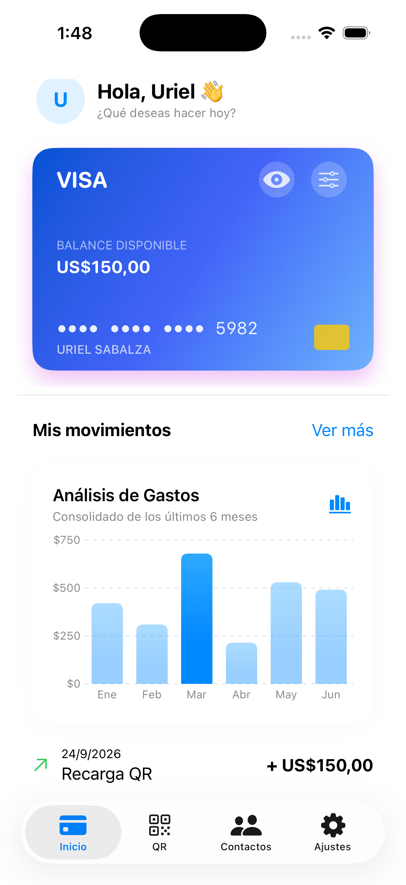
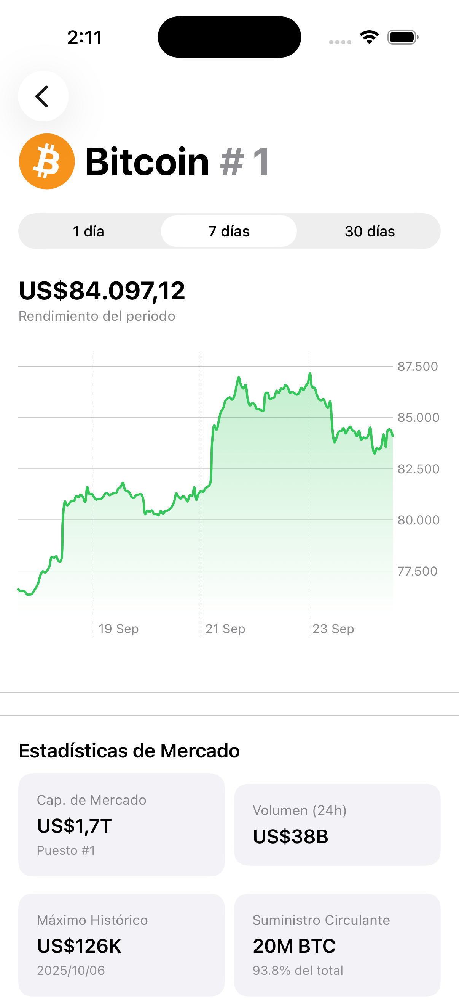
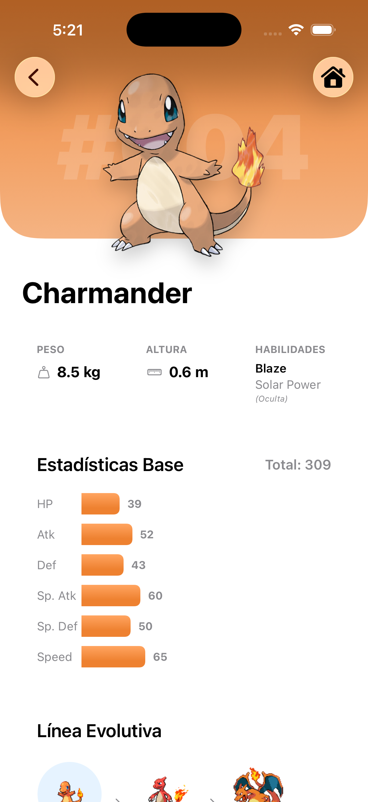

Diseño experiencias nativas e intuitivas para el ecosistema Apple.
Soy un desarrollador enfocado en la arquitectura limpia, interfaces fluidas y un rendimiento excepcional en iOS, iPadOS y watchOS.
Proyectos Destacados

TrackFit
Aplicación avanzada de fitness con métricas en tiempo real y sincronización completa con Apple Watch utilizando HealthKit.

FinanceFlow
Gestor de finanzas personales enfocado en la privacidad con SwiftData, gráficos interactivos integrados y widgets para iOS 17+.

CinemaSphere
Cliente API de películas que implementa arquitectura MVVM limpia, caché local, búsqueda predictiva y soporte completo fuera de línea.
Hablemos
¿Tienes un proyecto en mente o quieres colaborar en alguna app? ¡Escríbeme!